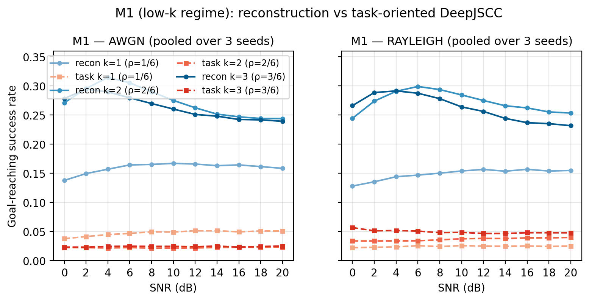
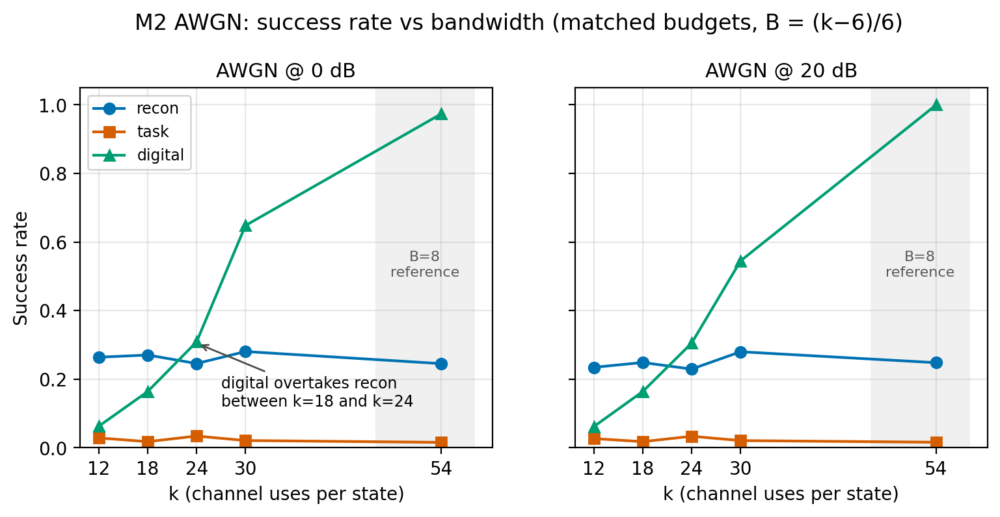
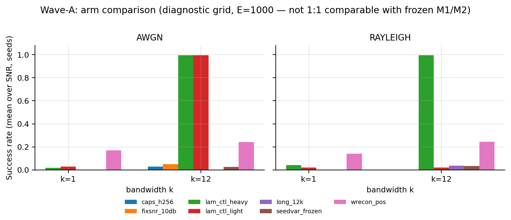
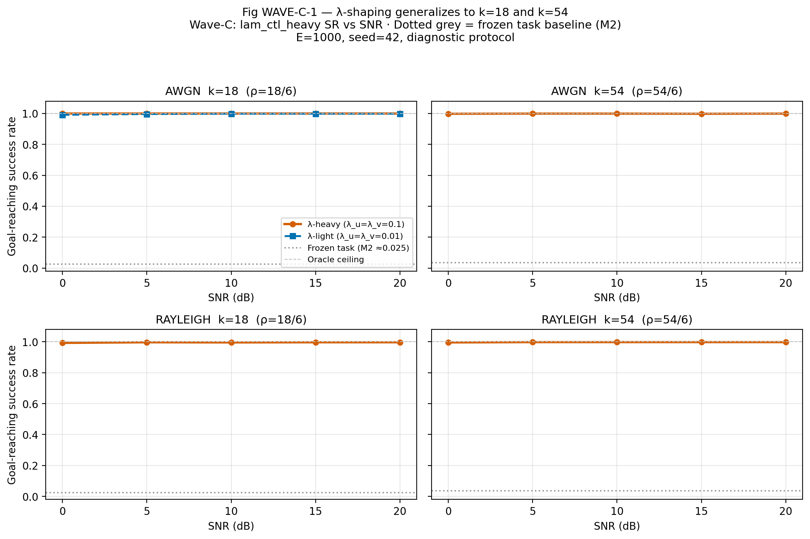
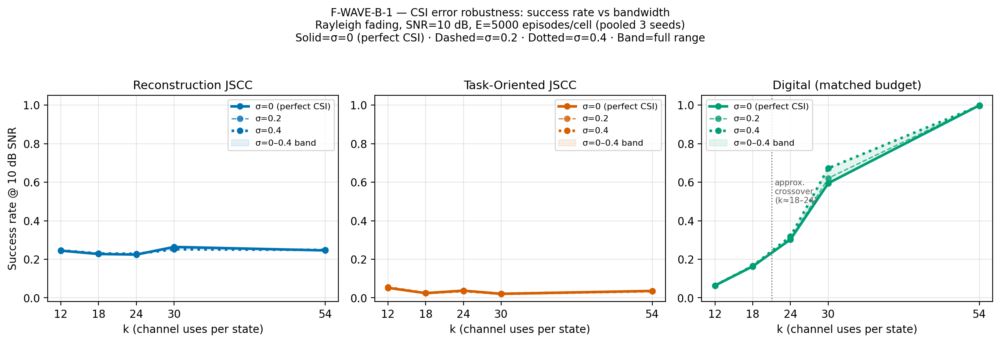
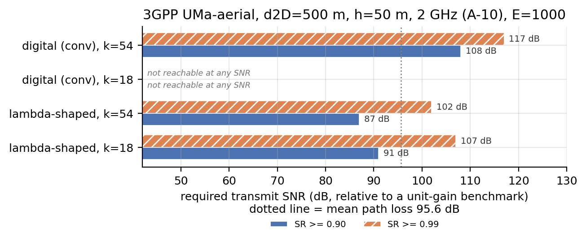
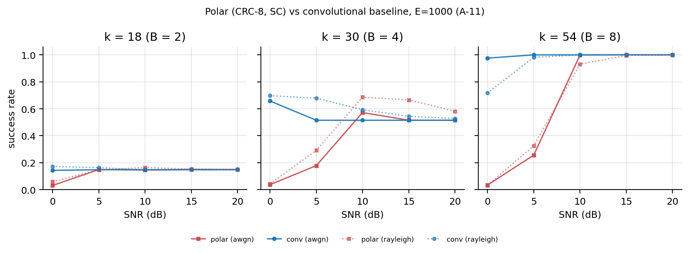
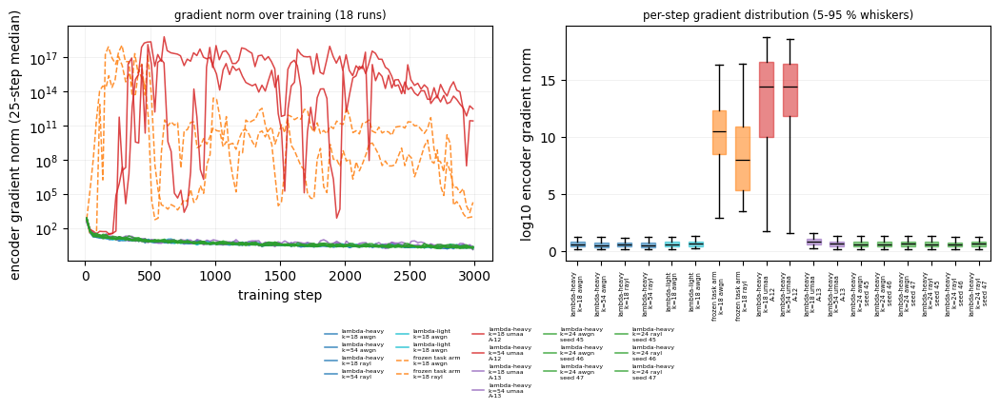

UAV reference paper — kaunsa paper use hua?
One-page summary
Mam ke liye ek line meinMam ke liye 30-second brief:
- Shuru: UAV ka navigation state (position, velocity, goal) noisy/fading link par transmit karna — reconstruction ke bajaye mission success ko optimise karna.
- Problem: fixed bandwidth mein har state component ko equal fidelity se bhejna zaroori nahi; asli sawal goal reach karna hai.
- Solution: task-oriented DeepJSCC + control/velocity penalty (λu=λv=0.1) — is se frozen arm 2–5% se 99%+ ho gaya.
- Result: k ≤ 18 par neural JSCC jeetta hai; k ≥ 24 par classical digital jeetta hai — fading aur low SNR mein hamara faida sab se bara hai.
The question we asked
Under a fixed wireless budget, should a UAV transmit its navigation state using a system optimised for reconstruction fidelity, or one optimised directly for reaching the goal? And when is a classical digital link simply better?
The answer the data gave
Low bandwidth (k ≤ 18): neural JSCC clearly wins. High bandwidth (k ≥ 24): classical digital wins. The task-oriented arm only works when the control/velocity penalty is non-zero — otherwise it collapses to 2–5% success.
How we started — the full journey
Shuru se result takProblem selection
We started from a practical observation: UAVs depend on a wireless link for navigation state, and that link is noisy and fading. Existing DeepJSCC work optimises reconstruction, but reconstruction error is not the mission objective — reaching the goal is.
Topic: task-oriented communication for UAV navigationLiterature review and gap analysis
We studied DeepJSCC (Bourtsoulatze et al. 2019), task-oriented VIB (Shao et al. 2022), task-oriented JSCC for control (Diao et al. 2024/2025), and four UAV-specific papers (Fang et al. 2025; Xu et al. 2023; Wu et al. 2024; Tang et al. 2025). None combined a low-dimensional UAV state, a differentiable AWGN/Rayleigh channel, and a closed-loop goal-reaching loss.
Gap identified and written as the proposalMathematical specification
We fixed the state vector, normalisation, UAV double-integrator dynamics, PD controller, AWGN and Rayleigh channel equations, power normalisation, bandwidth convention, and the task loss. Every constant was written into project/config.py with a provenance tag — no magic numbers elsewhere.
Implementation in Python / PyTorch
Three matched pipelines: a conventional digital chain (quantise → convolutional code → QPSK), a reconstruction DeepJSCC autoencoder, and a task-oriented DeepJSCC whose loss is defined on the navigation rollout. The channel is a differentiable layer, so gradients flow from the goal-reaching loss back to the encoder.
CPU-only · deterministic · 57/57 testsM1 — low-bandwidth experiment (k = 1, 2, 3)
198 evaluation units, 3 seeds. Reconstruction reached 24–31% success; the task-oriented arm sat at 2–5% and was flat across SNR. That was the first red flag: the task arm was not learning the task.
Finding: task arm failed at low kM2 — matched-budget three-way comparison (k = 12 … 54)
150 evaluation units, 3 seeds × 5,000 episodes. The bandwidth crossover appeared: neural JSCC wins at k = 12 and 18, digital overtakes at k = 24 and dominates at k = 54. But the task arm was still the worst method at every k.
Finding: crossover + task pathologyWave-A — diagnosis and the fix
We ran an arm ablation: control/velocity penalties, reconstruction auxiliary loss, fixed-SNR training, longer training, capacity. Only one change moved the needle — adding λu = λv = 0.1 to the task loss took success from 2–5% to 99.7%. Three controls confirmed the result was real, not a bypass.
Root cause found: missing control penaltyValidation waves
Wave-B (350 CSI cells), Wave-C (k = 18 and 54), A-9…A-14 (architecture, aerial link, mechanism, seeds), and A-15 (5G NR polar comparator, complete). The fix generalises, the mechanism is a ~14-order gradient-magnitude effect, and the crossover survives a stronger classical baseline.
Thesis-ready, with honest limitsProblem statement, gap and research questions
Asli masla kya thaProblem statement (from the approved proposal)
When a UAV's navigation-relevant state information (position, velocity, and goal information) is transmitted over a noisy or fading wireless channel using either a conventional digital pipeline or a reconstruction-oriented DeepJSCC scheme, the communication system is optimised to minimise a generic distortion measure on the transmitted state vector. This measure does not necessarily correspond to what matters operationally: the UAV's ability to reach its goal safely and efficiently. Under a fixed bandwidth and SNR budget, a communication system that spends its limited channel-use budget reproducing every component of the state vector with equal fidelity may perform worse, in terms of navigation outcome, than a system that allocates its representational capacity toward the state information that is most relevant to the navigation decision. The problem addressed in this project is therefore whether, and to what extent, training a DeepJSCC encoder/decoder directly against a navigation-task objective — a Task-Oriented DeepJSCC system — improves UAV navigation performance relative to conventional digital communication and reconstruction-oriented DeepJSCC, under identical AWGN and Rayleigh fading channel conditions.
Research gap
- DeepJSCC is mature for image reconstruction, not UAV state transmission.
- Task-oriented VIB is established for classification, not closed-loop control.
- UAV semantic work covers scheduling, triggering, waypoint repetition, or localisation — not a trained channel-symbol codec for goal-reaching.
- Task-oriented JSCC for control is proven for autonomous driving with cameras, not a 6-D UAV kinematic state.
- No prior work compares all three methods under matched bandwidth, matched SNR, and both AWGN and Rayleigh fading.
Research questions
- RQ1: Does task-oriented DeepJSCC beat reconstruction DeepJSCC and a conventional digital link on UAV goal-reaching?
- RQ2: How do channel type, SNR, and bandwidth change that gap?
Objectives
- Build an end-to-end task-oriented DeepJSCC framework for a 6-D UAV state.
- Integrate it with a 2-D UAV kinematic model and quantify communication-induced degradation.
- Benchmark against digital and reconstruction baselines at identical channel, SNR, and bandwidth.
Reference papers — what we used and what we did not copy
Kaunsa paper kis kaam aaya| Role in our FYP | Paper | What we took | What we did NOT copy |
|---|---|---|---|
| UAV navigation reference closest UAV paper |
Fang, Z., Liu, Z., Wang, J., Hu, S., Guo, Y., Deng, Y., & Fang, Y. (2025). Task-Oriented Communications for Visual Navigation with Edge-Aerial Collaboration in Low Altitude Economy. arXiv:2504.18317. | UAV-specific task-oriented navigation framing; edge–aerial collaboration; the gap that the link is modelled as Shannon capacity and the task is localisation. | O-VIB image encoder; multi-camera source; capacity-level channel abstraction; localisation-only task. |
| UAV dynamics & communication-aware control | Shiri, H., Park, J., & Bennis, M. (2019). Remote UAV Online Path Planning via Neural Network Based Opportunistic Control. arXiv:1910.04969. | Discrete-time double-integrator model; 2-D position/velocity state; communication-aware UAV control motivation. | HJB neural controller; delay model; 3GPP urban-micro path-loss chain. |
| Method reference (task-oriented JSCC for control) | Diao, Y., Meng, Z., Xu, X., She, C., & Zhao, P. G. (2024). Task-Oriented Source-Channel Coding Enabled Autonomous Driving Based on Edge Computing. IEEE INFOCOM Workshops. Diao, Y., Zhang, Y., De Martini, D., Zhao, P. G., & Li, E. L. (2025). Task-Oriented Co-Design of Communication, Computing, and Control for Edge-Enabled Industrial CPS. IEEE JSAC. Diao, Y. (2025). PhD thesis, University of Glasgow. |
End-to-end task-oriented VIB/JSCC trained against a downstream control objective; the principle that communication should be judged by task outcome, not fidelity. | CARLA simulator; camera imagery; DTCP trajectory prediction; delay decomposition; driving score. |
| DeepJSCC foundation | Bourtsoulatze, E., Kurka, D. B., & Gündüz, D. (2019). Deep Joint Source-Channel Coding for Wireless Image Transmission. IEEE TCCN, 5(3), 567–579. | Encoder/decoder architecture; power normalisation; AWGN and slow Rayleigh evaluation protocol; graceful degradation. | Image source; PSNR/MS-SSIM reconstruction objective. |
| Task-oriented IB theory | Shao, J., Mao, Y., & Zhang, J. (2022). Learning Task-Oriented Communication for Edge Inference: An Information Bottleneck Approach. IEEE JSAC, 40(1), 197–211. | Variational information bottleneck principle; task-aware, differentiable training. | Classification labels; image features; AWGN-only edge inference. |
| UAV semantic communication context | Xu, Y., Zhou, H., & Deng, Y. (2023). Task-Oriented Semantics-Aware Communication for Wireless UAV Control and Command Transmission. IEEE Communications Letters, 27(8). Wu, W., Yang, Y., Deng, Y., & Aghvami, A. H. (2024). Goal-Oriented Semantic Communications for Robotic Waypoint Transmission. arXiv:2312.13182. Tang, M., Feng, C., & Quek, T. Q. S. (2025). Decentralized Semantic Communication and Cooperative Tracking Control for a UAV Swarm over MIMO Fading Channels. IEEE TVT. |
Positioning of our contribution: these cover scheduling, repetition, and event-triggering, not a learned joint source–channel codec for goal-reaching. | Their scheduling / triggering / repetition mechanisms. |
System model — what exactly we simulated
Mathematical model1 · UAV state and dynamics
st = [x, y, vx, vy, xg, yg] ∈ ℝ6
# double integrator, Δt = 0.1 s, T = 100 steps
pt+1 = pt + Δt·vt + ½Δt²·ut
vt+1 = vt + Δt·ut
Workspace ±8 m, success radius 0.5 m, |u| ≤ 2 m/s², |v| ≤ 5 m/s.
2 · Shared controller
ut = clip(−Kp(pt − pg) − Kvvt, ±umax)
Kp = 1.0, Kv = 2.0, umax = 2.0
Keeping the controller fixed makes the comparison fair: only the communication system changes.
3 · Channel (differentiable)
y = z + n, n ~ CN(0, σ²I), σ² = 10−SNR/10
# slow Rayleigh + perfect CSI, ZF
y = h·z + n, h ~ CN(0,1) per codeword
ŷ = y / h
Power normalised per codeword: ‖z‖² = kP, P = 1.
4 · Task-oriented loss
Ld = mean ‖pt − pg‖²
Lu = mean ‖ut‖² Lv = mean ‖vt‖²
LT = ‖pT − pg‖²
# frozen: (λd, λu, λv, λT) = (1, 0, 0, 2)
# fixed: (1, 0.1, 0.1, 2)
5 · Three matched methods
B bits/scalar → frame/pad → K=7, rate-1/2 convolutional code → QPSK. Exactly k channel uses: 6B + 6 = k.
6 → 128 → 128 → 2k real symbols; trained on state reconstruction MSE only.
Same encoder/decoder, but trained end-to-end on the navigation rollout loss — gradients flow through decoder, channel, and encoder.
How we found the solution
Solution kaise mila — step by stepStep 1 — Notice the failure
In M1 and M2 the task-oriented arm sat at 2–5% success, flat across SNR. That is not “noisy channel” behaviour — it looked like the model had never learned the task.
Step 2 — Form a hypothesis
The frozen loss had λu = λv = 0. With no control or velocity penalty, the encoder could satisfy the distance terms with a representation that was useless for the controller. We hypothesised that the task loss was under-constrained, not that the architecture was too small.
Step 3 — Run an ablation, not a guess
Wave-A tested six arms at k = 12, 3 seeds, both channels. Only the control-penalty arms moved. Reconstruction auxiliary loss, fixed-SNR training, longer training, and extra capacity did not fix it.
Step 4 — Verify it is real
Three controls: an untrained model scores 0.016 (metric not exploitable), −20 dB drops success to 0.279 (channel genuinely used), and one λ-light arm is degenerate (the effect is fragile, so we report it).
| Wave-A arm (k = 12) | AWGN SR | Rayleigh SR |
|---|---|---|
| Frozen task loss (λu=λv=0) | 0.020–0.048 | 0.033 |
| λctl light (0.01, 0.01) | 0.995 | 0.019 |
| λctl heavy (0.1, 0.1) | 0.997 | 0.997 |
| Reconstruction auxiliary loss | 0.243 | 0.244 |
| Fixed 10 dB training | 0.050 | — |
| Longer training (12k steps) | 0.035 | — |
| Untrained random model | 0.016 | — |
Then we checked whether the fix generalises
What the data shows
Results — numbers ke saathM2 — the bandwidth crossover (AWGN, 3 seeds × 5,000 episodes)
| k | Reconstruction | Task (frozen λ) | Digital | What it means |
|---|---|---|---|---|
| 12 | 0.253 | 0.054 | 0.064 | Neural JSCC ≈ 4× the digital link |
| 18 | 0.237 | 0.025 | 0.165 | Neural still ahead |
| 24 | 0.235 | 0.036 | 0.324 | Crossover: digital overtakes |
| 30 | 0.262 | 0.021 | 0.629 | Digital clearly better |
| 54 | 0.249 | 0.036 | 0.935 | Digital dominates |
Reconstruction MSE is flat in k (0.049–0.054): the neural decoder is limited by its objective, not by bandwidth.
Wave-C — the λ-shaped link vs the best baseline (E = 1000)
| Condition | λ-shaped | Best baseline | Gap | Reading |
|---|---|---|---|---|
| k = 18, AWGN, 0 dB | 0.999 | 0.164 | +83.5 pp | Huge win at low bandwidth |
| k = 18, Rayleigh, 0 dB | 0.993 | 0.166 | +82.7 pp | Holds under fading |
| k = 54, AWGN, 0 dB | 0.998 | 0.974 | +2.4 pp | Near parity; digital saturates |
| k = 54, Rayleigh, 0 dB | 0.996 | 0.718 | +27.8 pp | Fading is where shaping matters |
| k = 54, Rayleigh, 20 dB | 0.998 | 1.000 | −0.2 pp | Honest parity, not a win |
A-15 — is the digital baseline artificially weak? (5G NR polar, E = 1000, pooled over 5 SNRs)
| k | Convolutional (frozen) | 5G NR polar + CA-SCL | Reading |
|---|---|---|---|
| 12 | 0.0654 | 0.0656 | Identical — crossover unchanged |
| 18 | 0.1470 | 0.1504 | Identical within CI |
| 24 | 0.2818 | 0.2926 | 5G slightly better; still above reconstruction 0.235 |
| 30 | 0.5436 | 0.5596 | 5G slightly better |
| 54 | 0.9952 | 0.9092 | Conv still stronger (5G runs at a higher rate here) |
Conclusion: the reported neural-vs-digital gap does not depend on the convolutional code being weak. The crossover at k = 18 → 24 survives a full 5G NR polar comparator.








Honest limitations — what we do not claim
Kya claim nahi kar sakteScope limits
- Simulation only. No physical UAV, no SDR, no flight test.
- 2-D kinematics. No altitude, attitude, wind, or rotor dynamics.
- Fixed PD controller. The controller is not jointly learned, by design, to keep the comparison fair.
- Perfect CSI in the main study; CSI error is a separate ablation (Wave-B).
- Flat Rayleigh fading. No Doppler, shadowing, or 3GPP dispersion in the main matrix.
Result limits
- λ-shaping is not a universal cure. A-12 showed it still diverges when training contains >20 dB outage episodes; resampling the tail (A-13) restores stability but does not move the operating point.
- The 0.99+ result is at the task ceiling. It proves the policy works, but it cannot resolve small differences between good methods.
- Two Wave-A cells failed (non-finite gradients). They are reported as failures, not retrained away.
- CSI success-rate insensitivity is coarse. MSE exposes an 18% degradation that SR hides.
- Polar baseline: A-11 used SC polar without rate matching. A-15 (full 5G NR chain, CA-SCL L = 8) is now complete and confirms the crossover — it does not overturn it.
Viva questions Madam may ask
Mam ke sawal aur jawabWhich UAV paper did you use as the reference?
Fang et al. (2025), arXiv:2504.18317 — “Task-Oriented Communications for Visual Navigation with Edge-Aerial Collaboration in Low Altitude Economy.” It is the UAV-specific task-oriented navigation paper in our review. Our method reference is Diao et al. (2024/2025), and our UAV dynamics reference is Shiri et al. (2019).
Why not just use the Fang et al. method directly?
Fang et al. transmit multi-camera image features and estimate position. We transmit a 6-D kinematic state and close the loop through a controller to a goal. Their channel is a Shannon-capacity abstraction; ours is a differentiable symbol-level AWGN/Rayleigh layer so the task loss can train the encoder end-to-end.
What exactly is “task-oriented” here?
The encoder and decoder are trained on the navigation rollout loss — distance to goal, control effort, velocity, and terminal distance — not on state reconstruction MSE. The receiver’s job is to support the control decision, not to reproduce the state bit-for-bit.
Why did the task arm fail at first?
The frozen loss had λu = λv = 0. Without a control or velocity penalty, the representation was not constrained to be useful for the controller, and the encoder gradient exploded to ~1014. Setting λu = λv = 0.1 fixed it.
Is 99.7% too good to be true?
We checked three controls: an untrained model scores 0.016; at −20 dB success drops to 0.279; and the λ-light Rayleigh arm is degenerate at 0.019. The policy also ends two orders of magnitude closer to the goal while using less than half the control effort — it is tracking, not idling.
So does semantic communication always win?
No. It wins at low bandwidth (k ≤ 18) and under fading. At k ≥ 24 the classical digital link overtakes, and at k = 54 / 20 dB it reaches 1.000 while we reach 0.998. We report that parity honestly.
What is the main contribution?
Three things: (1) a matched-budget, paired three-way benchmark for UAV state transmission over AWGN and Rayleigh; (2) the bandwidth-crossover result — a direct “when should 6G use semantic communication?” answer; (3) the λ-shaping diagnosis and mechanism, which explains why task-oriented training collapses and how to fix it.
What would you do next?
Write the thesis chapters from the frozen artifacts, test a harder task (tighter goal radius / shorter horizon) so the metric is no longer at ceiling, and optionally extend A-13 to a full-dispersion training run with the outage tail handled. A-15 (5G NR CA-SCL) is already complete; M5 remains deferred.
Where everything lives
Files ka mapDocuments
| File | What it contains |
|---|---|
fyp_md_files/fyp-proposal.txt | Full approved proposal: problem, literature, gap, RQs, methodology, references |
fyp_md_files/RESEARCH_ROADMAP.md | Short Roman-Urdu summary of the whole project and results |
fyp_md_files/RESULTS_WAVE_A_WAVE_B_2026-10-21.md | λ ablation + CSI sweep |
fyp_md_files/RESULTS_WAVE_C_2026-10-22.md | Generalisation to k = 18 / 54 |
fyp_md_files/RESULTS_MECHANISM_2026-10-27.md | Gradient-conditioning mechanism |
fyp_md_files/PROTOCOL_AMENDMENTS.md | Every pre-registered amendment A-1 … A-15 |
fyp_md_files/THESIS_DISCLOSURE_PARAGRAPHS.md | Ready-to-paste disclosure text |
Code and artifacts
| Path | What it is |
|---|---|
project/config.py | Every frozen constant, with provenance tags |
project/uav/ | Dynamics, controller, rollouts |
project/channels/ | AWGN and Rayleigh layers |
project/models/ | DeepJSCC encoder / decoder |
project/training/ | Reconstruction and task-oriented trainers |
project/baselines/digital.py | Conventional digital chain |
results/ | All evaluation JSONs and summaries |
results/POLAR5G/ | A-15 5G NR polar comparator (50 cells, CA-SCL L = 8) |
tests/ | 57/57 passing protocol and regression tests |
python main.py --help · python -m pytest tests/ -q · full protocol in SETUP.md and ARCHITECTURE.md. All experiments are CPU-only and deterministic; no GPU is required.